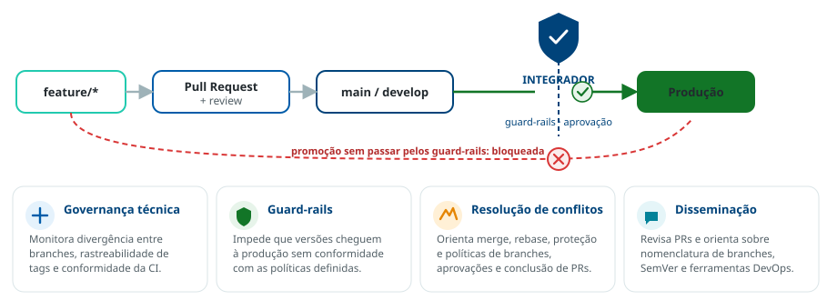

O papel de Integrador deve ser exercido de forma efetiva
O Integrador é um papel estratégico do ciclo de desenvolvimento, atuando como referência técnica para garantir a aplicação rigorosa das diretrizes institucionais de versionamento e integração. Cada repositório deve possuir integradores permissionados por time.
O papel
O Integrador exerce função de governança técnica. Embora possa desempenhar atividades comuns de desenvolvimento, sua responsabilidade principal é zelar pela qualidade e conformidade dos processos de controle de versões, assegurando o uso padronizado e eficiente dos repositórios de código e artefatos. O Integrador deve garantir que nenhuma versão em desenvolvimento seja promovida para o ambiente produtivo sem passar pelos guard-rails definidos.

Responsabilidades
- Governança técnica — monitorar indicadores como divergência entre branches, rastreabilidade de tags e conformidade com as políticas de integração contínua.
- Guard-rails de promoção — garantir que nenhuma versão seja promovida para produção sem passar pelos guard-rails definidos.
- Resolução de conflitos — atuar como ponto focal na resolução de conflitos complexos, orientando os desenvolvedores sobre práticas de merge, rebase, proteção e políticas de branches, aprovações e conclusões de pull requests.
- Disseminação de conhecimento — revisar pull requests e orientar sobre nomenclatura de branches, aplicação de SemVer e uso adequado das ferramentas de DevOps com foco em versionamento e integração de código.
O papel do Integrador não se limita à execução técnica: envolve a fiscalização dos processos, a comunicação clara das diretrizes e a antecipação de problemas que possam comprometer a estabilidade do código. A atuação efetiva do Integrador é requisito de conformidade do capítulo.
As referências metodológicas sobre este assunto devem ser incluídas aqui. (espaço reservado para os links institucionais.)